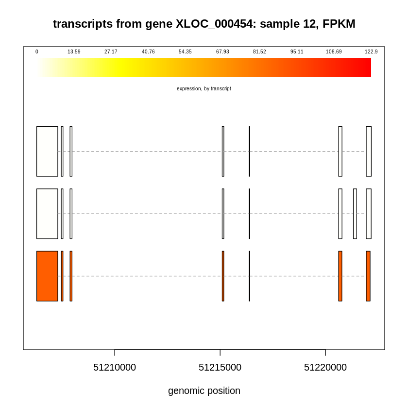
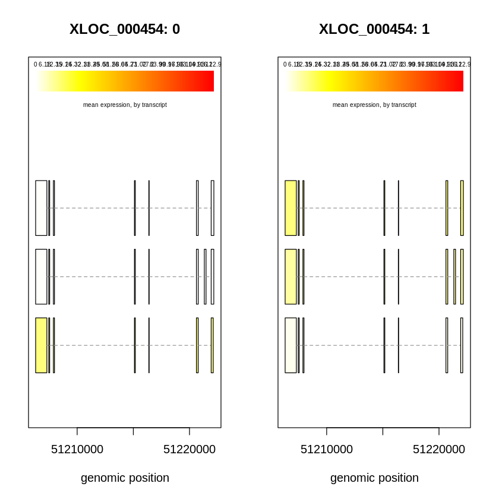
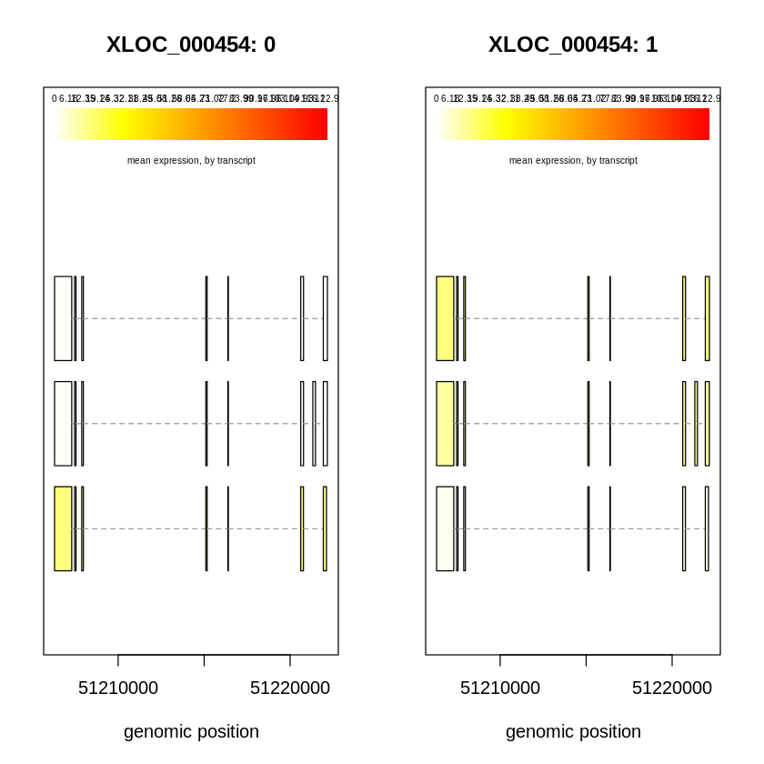
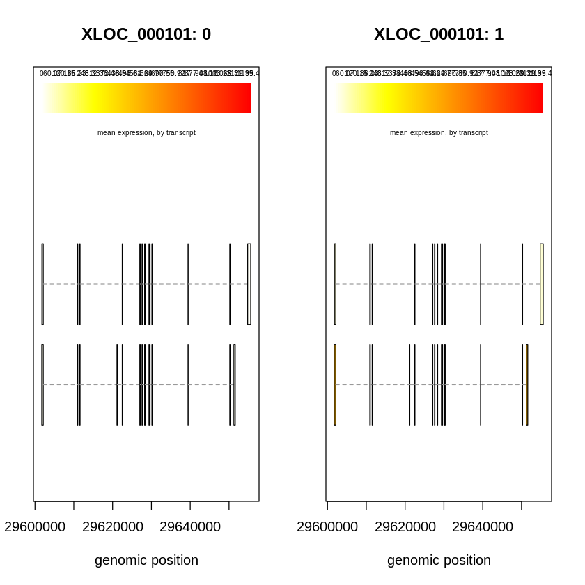

Isoform-level differential expression analysis with Ballgown.
This notebook is based on the reference: https://www.bioconductor.org/packages/release/bioc/vignettes/ballgown/inst/doc/ballgown.html
Install R package
## Took around 17 minutes
if (!require("BiocManager", quietly = TRUE))
install.packages("BiocManager")
BiocManager::install("ballgown")
Installing package into ‘/usr/local/lib/R/site-library’
(as ‘lib’ is unspecified)
'getOption("repos")' replaces Bioconductor standard repositories, see
'help("repositories", package = "BiocManager")' for details.
Replacement repositories:
CRAN: https://cran.rstudio.com
Bioconductor version 3.22 (BiocManager 1.30.26), R 4.5.2 (2025-10-31)
Installing package(s) 'BiocVersion', 'ballgown'
also installing the dependencies ‘plogr’, ‘png’, ‘formatR’, ‘abind’, ‘SparseArray’, ‘RSQLite’, ‘KEGGREST’, ‘lambda.r’, ‘futile.options’, ‘S4Arrays’, ‘DelayedArray’, ‘MatrixGenerics’, ‘AnnotationDbi’, ‘annotate’, ‘futile.logger’, ‘snow’, ‘BH’, ‘locfit’, ‘bitops’, ‘Rhtslib’, ‘SummarizedExperiment’, ‘cigarillo’, ‘RCurl’, ‘rjson’, ‘BiocGenerics’, ‘genefilter’, ‘BiocParallel’, ‘matrixStats’, ‘edgeR’, ‘statmod’, ‘XML’, ‘XVector’, ‘Biostrings’, ‘Rsamtools’, ‘GenomicAlignments’, ‘BiocIO’, ‘restfulr’, ‘GenomicRanges’, ‘IRanges’, ‘S4Vectors’, ‘sva’, ‘limma’, ‘rtracklayer’, ‘Biobase’, ‘Seqinfo’
Old packages: 'digest', 'testthat'
Understand the folder with example data
library(ballgown)
data_directory = system.file('extdata', package='ballgown') # automatically finds ballgown's installation directory
# examine data_directory:
data_directory
Attaching package: ‘ballgown’
The following object is masked from ‘package:base’:
structure
'/usr/local/lib/R/site-library/ballgown/extdata'
list.files(data_directory)
- 'annot.gtf.gz'
- 'hg19_genes_small.gtf.gz'
- 'sample01'
- 'sample02'
- 'sample03'
- 'sample04'
- 'sample05'
- 'sample06'
- 'sample07'
- 'sample08'
- 'sample09'
- 'sample10'
- 'sample11'
- 'sample12'
- 'sample13'
- 'sample14'
- 'sample15'
- 'sample16'
- 'sample17'
- 'sample18'
- 'sample19'
- 'sample20'
- 'tiny.genes.results.gz'
- 'tiny.isoforms.results.gz'
- 'tiny2.genes.results.gz'
- 'tiny2.isoforms.results.gz'
list.files(paste0(data_directory, "/sample01"))
- 'e_data.ctab'
- 'e2t.ctab'
- 'i_data.ctab'
- 'i2t.ctab'
- 't_data.ctab'
| File | Level | Purpose |
|---|---|---|
| e2t.ctab | Exon → Transcript | Maps each exon to transcript(s) |
| i2t.ctab | Intron → Transcript | Maps each intron to transcript(s) |
| t_data.ctab | Transcript | Expression + structural data |
| e_data.ctab | Exon | Exon expression levels |
| i_data.ctab | Intron | Intron expression levels |
list.files(file.path())
# make the ballgown object:
bg = ballgown(dataDir=data_directory, samplePattern='sample', meas='all')
bg
Thu Nov 13 22:22:51 2025
Thu Nov 13 22:22:51 2025: Reading linking tables
Thu Nov 13 22:22:51 2025: Reading intron data files
Thu Nov 13 22:22:51 2025: Merging intron data
Thu Nov 13 22:22:51 2025: Reading exon data files
Thu Nov 13 22:22:51 2025: Merging exon data
Thu Nov 13 22:22:51 2025: Reading transcript data files
Thu Nov 13 22:22:51 2025: Merging transcript data
Wrapping up the results
Thu Nov 13 22:22:51 2025
ballgown instance with 100 transcripts and 20 samples
Accessing assembly data
A ballgown object has six slots: structure, expr, indexes, dirs, mergedDate, and meas.
Exon, intron, and transcript structures are easily extracted from the main ballgown object:
Structure
structure(bg)$exon
GRanges object with 633 ranges and 2 metadata columns:
seqnames ranges strand | id transcripts
<Rle> <IRanges> <Rle> | <integer> <character>
[1] 18 24412069-24412331 * | 12 10
[2] 22 17308271-17308950 + | 55 25
[3] 22 17309432-17310226 + | 56 25
[4] 22 18121428-18121652 + | 88 35
[5] 22 18138428-18138598 + | 89 35
... ... ... ... . ... ...
[629] 22 51221929-51222113 - | 3777 1294
[630] 22 51221319-51221473 - | 3782 1297
[631] 22 51221929-51222162 - | 3783 1297
[632] 22 51221929-51222168 - | 3784 1301
[633] 6 31248149-31248334 * | 3794 1312
-------
seqinfo: 3 sequences from an unspecified genome; no seqlengths
structure(bg)$intron
GRanges object with 536 ranges and 2 metadata columns:
seqnames ranges strand | id transcripts
<Rle> <IRanges> <Rle> | <integer> <character>
[1] 22 17308951-17309431 + | 33 25
[2] 22 18121653-18138427 + | 57 35
[3] 22 18138599-18185008 + | 58 35
[4] 22 18185153-18209442 + | 59 35
[5] 22 18385514-18387397 - | 72 41
... ... ... ... . ... ...
[532] 22 51216410-51220615 - | 2750 c(1294, 1297, 1301)
[533] 22 51220776-51221928 - | 2756 1294
[534] 22 51220780-51221318 - | 2757 1297
[535] 22 51221474-51221928 - | 2758 1297
[536] 22 51220780-51221928 - | 2759 1301
-------
seqinfo: 1 sequence from an unspecified genome; no seqlengths
structure(bg)$trans
GRangesList object of length 100:
$`10`
GRanges object with 1 range and 2 metadata columns:
seqnames ranges strand | id transcripts
<Rle> <IRanges> <Rle> | <integer> <character>
[1] 18 24412069-24412331 * | 12 10
-------
seqinfo: 3 sequences from an unspecified genome; no seqlengths
$`25`
GRanges object with 2 ranges and 2 metadata columns:
seqnames ranges strand | id transcripts
<Rle> <IRanges> <Rle> | <integer> <character>
[1] 22 17308271-17308950 + | 55 25
[2] 22 17309432-17310226 + | 56 25
-------
seqinfo: 3 sequences from an unspecified genome; no seqlengths
$`35`
GRanges object with 4 ranges and 2 metadata columns:
seqnames ranges strand | id transcripts
<Rle> <IRanges> <Rle> | <integer> <character>
[1] 22 18121428-18121652 + | 88 35
[2] 22 18138428-18138598 + | 89 35
[3] 22 18185009-18185152 + | 90 35
[4] 22 18209443-18212080 + | 91 35
-------
seqinfo: 3 sequences from an unspecified genome; no seqlengths
...
<97 more elements>
expr
The expr slot is a list that contains tables of expression data for the genomic features. These tables are very similar to the *_data.ctab Tablemaker output files. Ballgown implements the following syntax to access components of the expr slot:
*expr(ballgown_object_name, <EXPRESSION_MEASUREMENT>)
where * is either e for exon, i for intron, t for transcript, or g for gene, and is an expression-measurement column name from the appropriate .ctab file. Gene-level measurements are calculated by aggregating the transcript-level measurements for that gene. All of the following are valid ways to extract expression data from the bg ballgown object:
transcript_fpkm = texpr(bg, 'FPKM')
transcript_cov = texpr(bg, 'cov')
whole_tx_table = texpr(bg, 'all')
exon_mcov = eexpr(bg, 'mcov')
junction_rcount = iexpr(bg)
whole_intron_table = iexpr(bg, 'all')
gene_expression = gexpr(bg)
Indexes
pData(bg) = data.frame(id=sampleNames(bg), group=rep(c(1,0), each=10))
pData(bg)
| id | group |
|---|---|
| <chr> | <dbl> |
| sample01 | 1 |
| sample02 | 1 |
| sample03 | 1 |
| sample04 | 1 |
| sample05 | 1 |
| sample06 | 1 |
| sample07 | 1 |
| sample08 | 1 |
| sample09 | 1 |
| sample10 | 1 |
| sample11 | 0 |
| sample12 | 0 |
| sample13 | 0 |
| sample14 | 0 |
| sample15 | 0 |
| sample16 | 0 |
| sample17 | 0 |
| sample18 | 0 |
| sample19 | 0 |
| sample20 | 0 |
Plotting transcript structures
plotTranscripts(gene='XLOC_000454', gown=bg, samples='sample12',
meas='FPKM', colorby='transcript',
main='transcripts from gene XLOC_000454: sample 12, FPKM')

It is also possible to plot several samples at once:
plotTranscripts('XLOC_000454', bg,
samples=c('sample01', 'sample06', 'sample12', 'sample19'),
meas='FPKM', colorby='transcript')

You can also make side-by-side plots comparing mean abundances between groups (here, 0 and 1):
plotMeans('XLOC_000454', bg, groupvar='group', meas='FPKM', colorby='transcript')

Differential expression analysis
Ballgown provides a wide selection of simple, fast statistical methods for testing whether transcripts are differentially expressed between experimental conditions or across a continuous covariate (such as time).
stat_results = stattest(bg, feature='transcript',
meas='FPKM', covariate='group',
getFC=TRUE)
results_transcripts <- data.frame(geneNames = geneNames(bg),
geneIDs = geneIDs(bg),
transcriptNames = transcriptNames(bg),
stat_results)
head(results_transcripts)
| geneNames | geneIDs | transcriptNames | feature | id | fc | pval | qval | |
|---|---|---|---|---|---|---|---|---|
| <chr> | <chr> | <chr> | <chr> | <chr> | <dbl> | <dbl> | <dbl> | |
| 10 | XLOC_000010 | TCONS_00000010 | transcript | 10 | 3.193499 | 0.01381576 | 0.10521233 | |
| 25 | XLOC_000014 | TCONS_00000017 | transcript | 25 | 1.549093 | 0.26773622 | 0.79114975 | |
| 35 | XLOC_000017 | TCONS_00000020 | transcript | 35 | 4.388626 | 0.01085070 | 0.08951825 | |
| 41 | XLOC_000246 | TCONS_00000598 | transcript | 41 | 1.440519 | 0.47108019 | 0.90253747 | |
| 45 | XLOC_000019 | TCONS_00000024 | transcript | 45 | 1.714340 | 0.08402948 | 0.48934813 | |
| 67 | XLOC_000255 | TCONS_00000613 | transcript | 67 | 2.518524 | 0.27317385 | 0.79114975 |
results_transcripts <- results_transcripts[order(results_transcripts$qval), ]
head(results_transcripts, 10)
| geneNames | geneIDs | transcriptNames | feature | id | fc | pval | qval | |
|---|---|---|---|---|---|---|---|---|
| <chr> | <chr> | <chr> | <chr> | <chr> | <dbl> | <dbl> | <dbl> | |
| 1225 | XLOC_000440 | TCONS_00001129 | transcript | 1225 | 5.67437122 | 1.035753e-05 | 0.001025395 | |
| 980 | XLOC_000179 | TCONS_00000452 | transcript | 980 | 6.25344921 | 2.514632e-05 | 0.001244743 | |
| 469 | XLOC_000101 | TCONS_00000244 | transcript | 469 | 119.29999938 | 2.398681e-04 | 0.007915648 | |
| 695 | XLOC_000354 | TCONS_00000883 | transcript | 695 | 0.21950959 | 3.302059e-04 | 0.008172596 | |
| 1012 | XLOC_000409 | TCONS_00001041 | transcript | 1012 | 0.24664434 | 1.527175e-03 | 0.030238073 | |
| 123 | XLOC_000029 | TCONS_00000059 | transcript | 123 | 0.01603345 | 2.097875e-03 | 0.034614939 | |
| 961 | XLOC_000176 | TCONS_00000435 | transcript | 961 | 4.96074399 | 2.736075e-03 | 0.038695918 | |
| 880 | XLOC_000531 | TCONS_00001277 | transcript | 880 | 29.40485236 | 3.272859e-03 | 0.040501628 | |
| 1063 | XLOC_000197 | TCONS_00000487 | transcript | 1063 | 3.12988187 | 4.555313e-03 | 0.050108442 | |
| 35 | XLOC_000017 | TCONS_00000020 | transcript | 35 | 4.38862590 | 1.085070e-02 | 0.089518247 |
results_transcripts[results_transcripts$geneIDs == "XLOC_000101", ]
| geneNames | geneIDs | transcriptNames | feature | id | fc | pval | qval | |
|---|---|---|---|---|---|---|---|---|
| <chr> | <chr> | <chr> | <chr> | <chr> | <dbl> | <dbl> | <dbl> | |
| 469 | XLOC_000101 | TCONS_00000244 | transcript | 469 | 119.299999 | 0.0002398681 | 0.007915648 | |
| 477 | XLOC_000101 | TCONS_00000252 | transcript | 477 | 3.128184 | 0.4511803632 | 0.902537469 |
plotMeans('XLOC_000101', bg, groupvar='group', meas='FPKM', colorby='transcript')

Reference
https://www.bioconductor.org/packages/release/bioc/vignettes/ballgown/inst/doc/ballgown.html